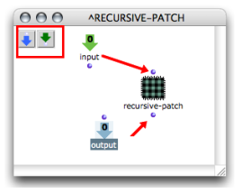
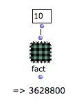

OpenMusic DocumentationHiérarchie de section : OM 6.6 User Manual > Visual Programming II > Abstraction > Recursive Patches > Recursion in OM
OpenMusic DocumentationHiérarchie de section : OM 6.6 User Manual > Visual Programming II > Abstraction > Recursive Patches > Recursion in OM
Navigation : page précédente | page suivante
Attention, votre navigateur ne supporte pas le javascript ou celui-ci à été désactivé. Certaines fonctionnalités de ce guide sont restreintes.
Recursion in OM
Creating a Recursion
A recursive program can be designed putting the reference of a blue patch in its own editor – that is, putting a patch within itself . |
Creating a recursion : a patch is dropped into its own editor.
|
{kind=link}
If this patch has inputs and outputs, they will also appear on the patch box, so that the patch can be "called from inside itself". |

|
Infinite Calls / Termination
A termination condition is absolutely necessary in a recursive patch. Otherwise, a succession of infinite calls will be triggered at the evaluation.
Remind to save all your material before calling a recursive patch.
Internal Patch Recursion
Do not ever build recursive programs with internal – red – patches, or with OMLoop boxes. A function has to be global to apply within itself.
Example: Factorial Patch
This recursive patch implements a preliminary version of the factorial function. It is called inside itself and calculates fact(n) = n x fact(n-1). This function has no termination condition. If it is called in its current state, it will never end. |
{kind=link}
Termination :
The resulting patch means : if n = 1, then fact(n) = 1 else, fact(n) = n x fact(n-1)
|
{kind=link}
Using Omif

Références :
Plan :
Navigation : page précédente | page suivante
A propos...(c) Ircam - Centre Pompidou